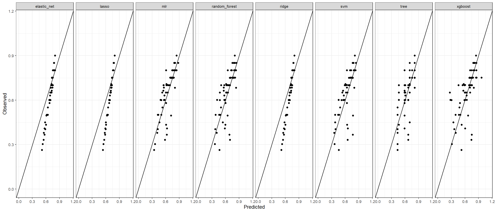

Understanding the factors affecting the productivity in a garment factory
analysis
R
Author
Aditya Ranade
Published
June 8, 2025
I found this dataset on UCI machine learning repository which gives the dataset regarding the productivity in a garment factory. One variable measures the target productivity which has been set by the management and the variable of interest is the actual productivity. The goal is to predict the actual predictivity using the other variables.
library(reshape2)library(ggplot2)library(ggh4x)library(ggcorrplot)library(GGally) # for pairs plot using ggplot frameworklibrary(dplyr)library(glmnet)library(knitr)# Get cars data from github repopath <-"https://raw.githubusercontent.com/adityaranade/portfolio/refs/heads/main/productivity/productivity.csv"data0 <-read.table(path, fill =TRUE, header =FALSE)data0 <-read.csv(path, header =TRUE)head(data0)
# Check the rows which do not have any entriessum(is.na(data0)) # 506 NA values
[1] 506
# Delete the NA valuesdata1 <-na.omit(data0)sum(is.na(data1)) # no NA values
[1] 0
The distributions of the continuous variables on the original scale indicates some non linear relationships between the response variable actual_productivity and the other variables. So we convert the data to log scale and the relationships become close to linear. Hence we will use the data on log scale for predictions. The distribution of the data on the log scale is as follows
# Pairs plot between the explanatory variables to # check correlation between each pair of the # continuous variablesggpairs(data1[,sapply(data1,is.numeric)])
The response variable, actual_productivity is correlated with all the variables which is good. However, the explanatory variables are correlated within themselves which is not a good indication. This indicates there is some multicollinearity. This means two variables give similar information about the response variable. One way to mitigate the effect is to consider the principal components and then use the principal components for the models. Another way is to use some regularization to mitigate the effect of multicollinearity.
# split the data into training and testing datadataa <- data1 |> dplyr::select(targeted_productivity, incentive, over_time, actual_productivity)# If considering original scaledata <- dataa# # If considering log scale# dataa$over_time <- dataa$over_time + min(dataa$over_time[dataa$over_time > 0])# dataa$incentive <- dataa$incentive + min(dataa$incentive[dataa$incentive > 0])# data <- dataa |> log()# Split data in training and testing setseed <-23set.seed(seed)ind <-sample(floor(0.8*nrow(data)),replace =FALSE)# Training datasetdata_train <- data[ind,]# Testing datasetdata_test <- data[-ind,]
Based on the correlation between pairs of variables and the relationship of each variable, it seems difficult to identify which variables will be useful in the regression model. So, we will look at variable which logically should impact the productivity. The variables we consider for the analysis are targeted productivity, incentive and overtime. First, we will look at a multiple linear regression model
# Fit a multiple linear regression modelmodel_lm <-glm(actual_productivity ~ ., data = data_train)# Check the summary of the modelmodel_lm |>summary()
Call:
glm(formula = actual_productivity ~ ., data = data_train)
Coefficients:
Estimate Std. Error t value Pr(>|t|)
(Intercept) 1.377e-01 2.624e-02 5.250 2.18e-07 ***
targeted_productivity 6.146e-01 3.641e-02 16.883 < 2e-16 ***
incentive 3.480e-03 1.287e-04 27.045 < 2e-16 ***
over_time -2.763e-06 1.107e-06 -2.497 0.0128 *
---
Signif. codes: 0 '***' 0.001 '**' 0.01 '*' 0.05 '.' 0.1 ' ' 1
(Dispersion parameter for gaussian family taken to be 0.005828163)
Null deviance: 14.5158 on 551 degrees of freedom
Residual deviance: 3.1938 on 548 degrees of freedom
AIC: -1267.6
Number of Fisher Scoring iterations: 2
# Prediction on the testing datasety_pred_lm <-predict(model_lm, data_test)# Data frame for observed vs predicteddf_pred_mlr <-data.frame(predicted = y_pred_lm, observed = data_test$actual_productivity)df_pred_mlr$model <-"mlr"# Evaluation metricsrmse_lm <-sqrt(sum(data_test$actual_productivity-y_pred_lm)^2)mae_lm <-mean(abs(data_test$actual_productivity-y_pred_lm))r2_lm <-1-sum((data_test$actual_productivity - y_pred_lm)^2) /sum((data_test$actual_productivity -mean(data_test$actual_productivity))^2)
Next, we will try the lasso regression which uses the \(L^1\) penalty.
# Lasso regression (L1 penalty)model_l1_cv <-cv.glmnet(as.matrix(data_train[,-1]),as.matrix(data_train[,1]),alpha =0)#find optimal lambda value that minimizes test MSEbest_lambda_l1 <- model_l1_cv$lambda.minbest_lambda_l1
[1] 0.007170258
model_l1 <-glmnet(as.matrix(data_train[,-1]),as.matrix(data_train[,1]),alpha =0, lambda = best_lambda_l1)# Coefficients of the lasso regression model coef(model_l1)
4 x 1 sparse Matrix of class "dgCMatrix"
s0
(Intercept) 4.224381e-01
incentive -2.986123e-04
over_time -1.624768e-06
actual_productivity 4.535232e-01
# Prediction on the testing datasety_pred_l1 <-predict(model_l1, s = best_lambda_l1,newx=as.matrix(data_test[,-1]))# Data frame for observed vs predicteddf_pred_l1 <-data.frame(predicted =as.vector(y_pred_l1), observed = data_test$actual_productivity)df_pred_l1$model <-"lasso"# Evaluation metricsrmse_l1 <-sqrt(sum(data_test$actual_productivity-y_pred_l1)^2)mae_l1 <-mean(abs(data_test$actual_productivity-y_pred_l1))r2_l1 <-1-sum((data_test$actual_productivity - y_pred_l1)^2) /sum((data_test$actual_productivity -mean(data_test$actual_productivity))^2)
Next, we will try the ridge regression which uses the \(L^2\) penalty.
# Ridge regression (L2 penalty)model_l2_cv <-cv.glmnet(as.matrix(data_train[,-1]),as.matrix(data_train[,1]),alpha =1)#find optimal lambda value that minimizes test MSEbest_lambda <- model_l2_cv$lambda.minbest_lambda
[1] 0.0001544785
model_l2 <-glmnet(as.matrix(data_train[,-1]),as.matrix(data_train[,1]),alpha =1, lambda = best_lambda)# Coefficients of the ridge regression model coef(model_l2)
4 x 1 sparse Matrix of class "dgCMatrix"
s0
(Intercept) 3.692767e-01
incentive -7.601171e-04
over_time -1.152732e-06
actual_productivity 5.515953e-01
# Prediction on the testing datasety_pred_l2 <-predict(model_l2, s = best_lambda,newx=as.matrix(data_test[,-1]))# Data frame for observed vs predicteddf_pred_l2 <-data.frame(predicted =as.vector(y_pred_l2), observed = data_test$actual_productivity)df_pred_l2$model <-"ridge"# Evaluation metricsrmse_l2 <-sqrt(sum(data_test$actual_productivity-y_pred_l2)^2)mae_l2 <-mean(abs(data_test$actual_productivity-y_pred_l2))r2_l2 <-1-sum((data_test$actual_productivity - y_pred_l2)^2) /sum((data_test$actual_productivity -mean(data_test$actual_productivity))^2)
Next, we will try the elastic net regression which is a combination of lasso (\(L^1\) penalty) and ridge (\(L^2\) penalty) regression.
# Elastic netmodel_en_cv <-cv.glmnet(as.matrix(data_train[,-1]),as.matrix(data_train[,1]),alpha =0.5)#find optimal lambda value that minimizes test MSEbest_lambda_en <- model_en_cv$lambda.minbest_lambda_en
[1] 0.0002337147
model_en <-glmnet(as.matrix(data_train[,-1]),as.matrix(data_train[,1]),alpha =0.5, lambda = best_lambda_en)# Coefficients of the elastic net regression model coef(model_en)
4 x 1 sparse Matrix of class "dgCMatrix"
s0
(Intercept) 3.699412e-01
incentive -7.557217e-04
over_time -1.169229e-06
actual_productivity 5.505558e-01
# Prediction on the testing datasety_pred_en <-predict(model_en, s = best_lambda_en,newx=as.matrix(data_test[,-1]))# Data frame for observed vs predicteddf_pred_en <-data.frame(predicted =as.vector(y_pred_en), observed = data_test$actual_productivity)df_pred_en$model <-"elastic_net"# Evaluation metricsrmse_en <-sqrt(sum(data_test$actual_productivity-y_pred_en)^2)mae_en <-mean(abs(data_test$actual_productivity-y_pred_en))r2_en <-1-sum((data_test$actual_productivity - y_pred_en)^2) /sum((data_test$actual_productivity -mean(data_test$actual_productivity))^2)
Next, we will try the tree based approach.
# Tree approachlibrary(rpart)library(rpart.plot)# Fit regression treemodel_tree <-rpart(actual_productivity ~ ., data = data_train, method ="anova")# summary(model_tree)# Plotrpart.plot(model_tree, type =3, extra =101, fallen.leaves =TRUE)
y_pred_tree <-predict(model_tree, data_test)# Data frame for observed vs predicteddf_pred_tree <-data.frame(predicted = y_pred_tree, observed = data_test$actual_productivity)df_pred_tree$model <-"tree"# Evaluation metricsrmse_tree <-sqrt(sum(data_test$actual_productivity-y_pred_tree)^2)mae_tree <-mean(abs(data_test$actual_productivity-y_pred_tree))r2_tree <-1-sum((data_test$actual_productivity - y_pred_tree)^2) /sum((data_test$actual_productivity -mean(data_test$actual_productivity))^2)
Next, we will try the random forest approach. In random forest approach, we build multiple trees and then average the predictions of all the trees.
# Random forestlibrary(randomForest)model_rf <-randomForest(actual_productivity ~ ., data = data_train)y_pred_rf <-predict(model_rf, data_test)# Data frame for observed vs predicteddf_pred_rf <-data.frame(predicted = y_pred_rf, observed = data_test$actual_productivity)df_pred_rf$model <-"random_forest"# Evaluation metricsrmse_rf <-sqrt(sum(data_test$actual_productivity-y_pred_rf)^2)mae_rf <-mean(abs(data_test$actual_productivity-y_pred_rf))r2_rf <-1-sum((data_test$actual_productivity - y_pred_rf)^2) /sum((data_test$actual_productivity -mean(data_test$actual_productivity))^2)
Next, we will try the support vector machine (SVM) approach.
library(e1071)model_svm <-svm(actual_productivity ~ ., data = data_train, kernel ="radial", cost =10, gamma =0.1)# Predict on test datay_pred_svm <-predict(model_svm, data_test)# Data frame for observed vs predicteddf_pred_svm <-data.frame(predicted = y_pred_svm, observed = data_test$actual_productivity)df_pred_svm$model <-"svm"# Evaluation metricsrmse_svm <-sqrt(sum(data_test$actual_productivity-y_pred_svm)^2)mae_svm <-mean(abs(data_test$actual_productivity-y_pred_svm))r2_svm <-1-sum((data_test$actual_productivity - y_pred_svm)^2) /sum((data_test$actual_productivity -mean(data_test$actual_productivity))^2)
The observed vs. predicted for all the models side by side can be seen in the plot below
# Plot observed vs. predicted for all the modelsdf_pred <-rbind(df_pred_mlr,df_pred_l1,df_pred_l2, df_pred_en, df_pred_tree, df_pred_rf, df_pred_svm)# Create a observed vs. predicted plot combined for all the modelsggplot(df_pred,aes(predicted,observed))+geom_point()+lims(x =c(0,1.15) , y =c(0,1.15))+labs(y ="Observed", x="Predicted")+facet_grid(~model, scales="free")+geom_abline()+theme_bw(base_size =10)

Combined evaluation metrics to compare all the models can be seen in the table below.